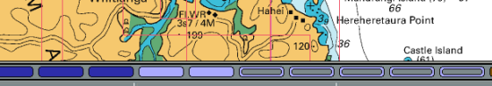
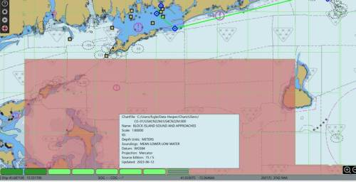
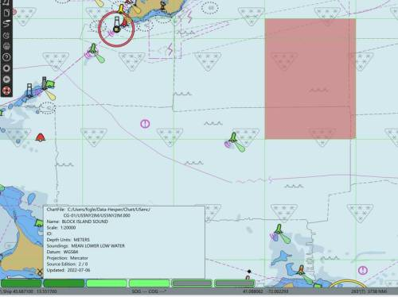
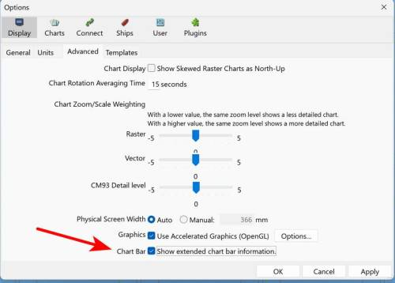
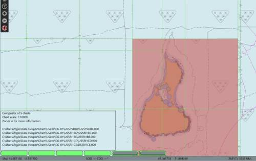
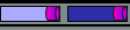
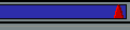
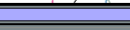
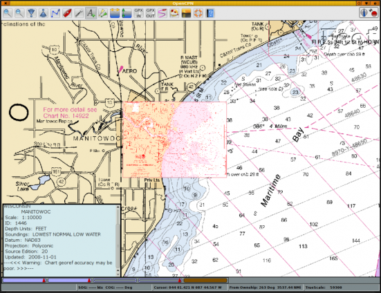

Chart Bar
+ image:/opencpn/manual_basic/user_interface/1-options-chart-buttons-enc.png[/opencpn/manual_basic/user_interface/1-options-chart-buttons-enc,width=150] + image:/opencpn/manual_basic/user_interface/2-options-chart-buttons-rnc-icon.png[/opencpn/manual_basic/user_interface/2-options-chart-buttons-rnc-icon,width=180] + The *Chart Bar* appears just above the _link:./../ui_user_interface/statusbar.html[Status Bar]_ when enabled by
-
Toolbar→User Interface→Interface Options→Show Chart Bar
-
Or by using the Ctrl+B toggle
The Chart Bar action changes when Chart Quilting is activated by Chart Panel Hamburger → Display Options → Enable Chart Quilting. Tick the box.
The ChartBar shows all the available charts for the present view,
represented by one colored segment for each chart. The order between the
segments represents the scale of the charts. Largest scale to the left,
smallest to the right. If CM93 is available, it is always furthest to
the right.
The segmented color bars in the Status Bar represent:
-
Blue for Raster
-
Green For ENC’s
-
Brown/Yellow for CM93 charts
-
The current chart displays as a lighter shade of its color, or if quilting is active, the charts currently making up the quilt are displayed in lighter shade.
The ChartBar below consisting of 12 segments shows a quilt of two active
charts. Five charts in the quilt are hidden, due to small scale. CM93 is
in it’s place, to the right. Four charts of larger scale than the
present view are available. The largest scale chart is a Transverse
Mercator chart. Also refer to
Staged
Chart Bars below.

Displaying Charts
Displaying Charts in Single Chart mode and Multiple Charts mode or "Chart Quilting" mode. Toolbar→User Interface→Show ChartBar or Ctrl+B toggle.
Chart Quilting is On
The Chart Bar handles a maximum of 100 charts. The largest scale charts
will be dropped first if more than 100 chart are available on a
position. It is unlikely that this will be much of a limitation, but the
possibility certainly exists if a lot of info charts, pilot charts and
weather charts etc, are loaded. The symptom will be that large scale
charts becomes impossible to display.
Staged Chart Bars
OpenCPN 5.9 implements a Staged ChartBar scheme to reduce the number of Chart buttons thus avoiding flooding the Chart Bar area with many tiny chart buttons. When zoomed out, similar charts are grouped into a single Chart button, or "group" button.
-
To see more Chart Information about each chart, the user zooms in and then ChartBar buttons change to "single" chartbar buttons and also "group" buttons.
-
When the a Chartbar button is clicked "group" buttons show summary information and "single" chart buttons show more detailed chart information. This system works well, providing access to Chart information across many charts.


For a more detailed listing and extended information Toolbar→Display→Advanced Tab→ChartBar Show extended chart bar information. Then the pathnames for the chart groups is shown.


Chart Quilting is Off
See Display Mode When you hover the mouse pointer over the bar, and not
in quilting mode, a thumbnail of the chart will appear under the
Scaling Charts icons and
a chart information box will pop up just above the button. If quilting
is on, instead of a thumbnail, the chart represented by the button will
be highlighted in a transparent reddish color. By clicking on the
appropriate bar, or using the appropriate
Keyboard
Shortcuts, you will switch to the chart shown in the thumbnail. This
feature is especially useful if you wish to view an ENC or a Raster
chart of the same area.
=== Chart Bar Buttons ===
Rectangular and Rounded: In Single Chart Mode the rectangles of the "chart piano" on the bottom have sharp corners, in Quilted Mode they will be rounded.
The buttons, or colored segments, are displaying a lot more information.

This button shows the two charts are Transverse Mercator, and that single char mode is used as the corners of the segments are not rounded.

This button indicates that the chart is a Polyconic chart.

This button shows that the chart is Skewed, meaning that north is not up on the chart.
This chart is excluded from quilting because of user action. Right click to include in quilting again. Notice the rounded corners due to quilt mode.
The raster chart represented by this button don’t participate in the quilt because it is hidden by other, larger scale charts. Vector charts are represented similar.
To illustrate a lot of this, here is a screen shot in quilting mode.

The screen is a quilt of two Polyconical charts. Hovering the mouse pointer over the left chart-button highlights the lager scale chart for Manitowoc. Two smaller scale charts that cover the area displayed on the screen are included in the quilt, but are invisible as they are covered by the larger scale charts. To view these charts, right-click anywhere on a chart in the quilt and select "Remove this chart from quilt", one of these charts will now be shown in the quilt.
The Brown right most button shows that CM93 version 2, charts are available for the area, but not currently displayed.
The information box shows relevant information about the chart.
Multiple CM93 Groups of Charts
It is possible to have multiple instances of CM93v2 in different Chart Groups. OpenCPN also supports multiple partial CM93 data sets. The instances are loaded, from left to right, in the order of the chart groups. See how this works Chart Groups and CM93.
MBTile use of Chart Status Bar
Example:
For areas where CM93 is lacking, sometimes SASplanets CMap overlay saved as an MBTile in a separate folder "MBCharts" (to keep it separate from satellite MBtiles).
Using dual canvas, with one side with chart group "cm93" selected, and chart group "all" selected on the other side. How do we know which Chart Button is MBCharts?
Is there a way of selecting cm93 & mbChart folders only in one canvas when I need to have better detail in an area? Also mbtile satellite imagery is distracting.